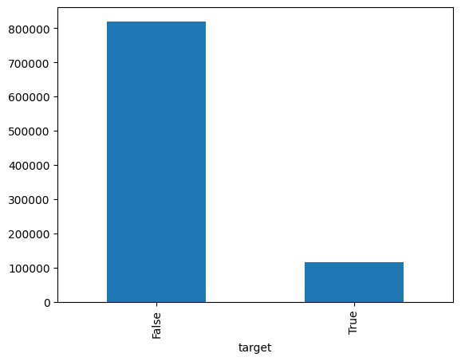
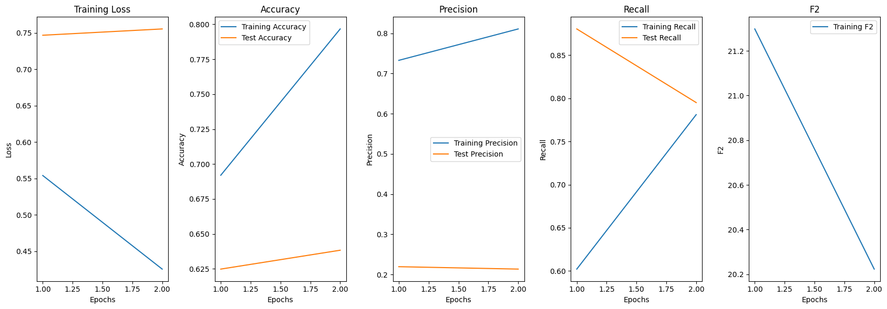
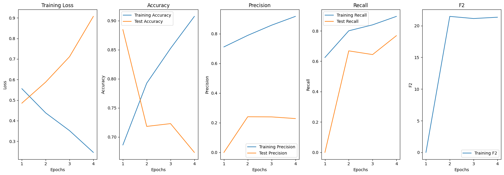
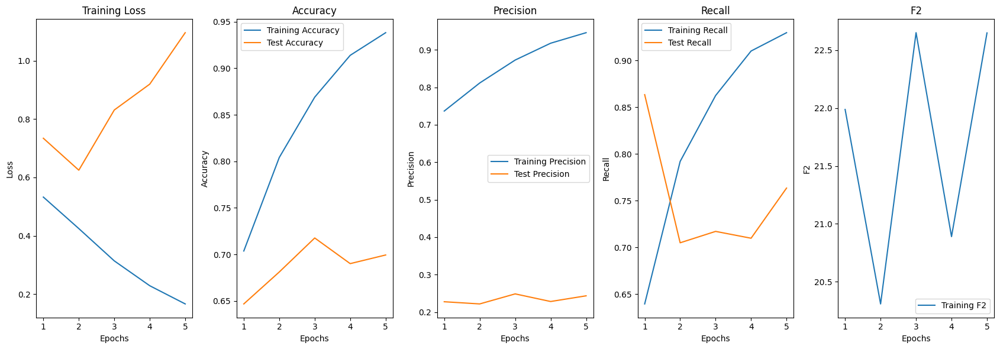

Code
!pip install torchsampler
!pip install sacremosesThis notebook is about predicting if a comment will have a reply base or not using LLM. I use here, a dataset constituate of a comment under posts of Le Soleil Page on Facebook. You will find a complete description and analyse of this dataset here. I use a prepared version of the original dataset, which contains news features about each comment.
!pip install torchsampler
!pip install sacremosesimport transformers, torch
from transformers import AutoModelForSequenceClassification, AutoTokenizer
from torch.utils.data import Dataset
from sklearn.metrics import accuracy_score, precision_score, recall_score, confusion_matrix
from torchsampler import ImbalancedDatasetSampler
from sklearn.model_selection import train_test_split
from tqdm import tqdm
import pandas as pd
from torch.optim.lr_scheduler import ReduceLROnPlateau
from IPython.display import clear_output
import matplotlib.pyplot as plt
import multiprocessing as mp
import time
# warnings.filterwarnings('ignore')
device = 'cuda' if torch.cuda.is_available() else 'cpu'
mp.cpu_count()from google.colab import drive
drive.mount('/content/drive')Mounted at /content/drivedirpath = '/content/drive/MyDrive/DataSets/big_data/datasets' # specify here the path to the dataset
train = pd.read_csv(dirpath + '/split/train_dataset.csv', index_col=0)
test = pd.read_csv(dirpath + '/split/valid_dataset.csv', index_col=0)
valid = pd.read_csv(dirpath + '/valid_dataset.csv', index_col=0)Some litle notes about the dataset I use. First, it contains almost millions lines
dataset = pd.concat([train, test])
print(f'Dataset shape: {dataset.shape}')Dataset shape: (935698, 68)Next, it important to note that our dataset is heavy unbalanced. The following plot show that there are only ~13% of comment with reply.
dataset['target'].value_counts(normalize=True)target
False 0.876036
True 0.123964
Name: proportion, dtype: float64dataset['target'].value_counts().plot(kind='bar')
It is important to find a way to mitigate those two problems. For the first one, we can only use undersamplig. It offers the advantage to control the amount of data that we will use in finetuning step.
The undersampling also help to solve the second problem. At first time, having so much data to train our model could have be an advantage. But on limited ressource, it will take a lot of time to run only one epoch of that. And, we are also limited on quantity of items in our batch. This one is limited by the capacity of our RAM. So, for my modest experience, I will only train and test on a small subset of the whole dataset. I use equal sampling, to sample the same amout of the items for each class.
class CommentDataset(Dataset):
def __init__(self, message, labels, tokenizer):
self.message = message
self.labels = labels
self.tokenizer = tokenizer
def get_labels(self):
return self.labels
def __len__(self):
return len(self.message)
def __getitem__(self, idx):
text = self.message[idx]
label = self.labels[idx]
inputs = self.tokenizer.encode_plus(text, None, add_special_tokens=True, padding='max_length', return_token_type_ids=True, truncation=True)
return {
'input_ids': torch.tensor(inputs['input_ids'], dtype=torch.long),
'attention_mask': torch.tensor(inputs['attention_mask'], dtype=torch.long),
'token_type_ids': torch.tensor(inputs["token_type_ids"], dtype=torch.long),
'labels': torch.tensor(label, dtype=torch.float)
}
def train_model(model, train_dataloader, test_dataloader, history={}, num_epochs=5, lr=5e-5, early_stopping_patience=3, weight_decay=0.01):
device = torch.device("cuda" if torch.cuda.is_available() else "cpu")
model.to(device)
optimizer = torch.optim.AdamW(model.parameters(), lr=lr, weight_decay=weight_decay)
scheduler = ReduceLROnPlateau(optimizer, mode='max', factor=0.1, patience=1) # ReduceLROnPlateau scheduler
loss_fn = torch.nn.BCEWithLogitsLoss() # Binary Cross-Entropy Loss
history['train_loss'] = []
history['train_accuracy'] = []
history['train_precision'] = []
history['train_recall'] = []
history['test_accuracy'] = []
history['test_precision'] = []
history['test_recall'] = []
history['epochs'] = []
history['test_loss'] = []
history['valid_score'] = []
best_valid_score = 0
early_stopping_counter = 0
for epoch in range(num_epochs):
model.train()
train_loss = 0.0
train_preds = []
train_labels = []
# Training loop
for _, batch in enumerate(tqdm(train_dataloader, desc=f'Epoch {epoch + 1}/{num_epochs}')):
optimizer.zero_grad()
input_ids = batch['input_ids'].to(device)
attention_mask = batch['attention_mask'].to(device)
token_type_ids = batch['token_type_ids'].to(device)
labels = batch['labels'].to(device)
outputs = model(input_ids, attention_mask=attention_mask, token_type_ids=token_type_ids)
logits = outputs.logits.squeeze(1)
loss = loss_fn(logits, labels)
loss.backward()
optimizer.step()
train_loss += loss.item()
train_preds.extend((logits > 0.5).int().tolist())
train_labels.extend(labels.tolist())
# Calculate metrics on training set
train_accuracy = accuracy_score(train_labels, train_preds)
train_precision = precision_score(train_labels, train_preds, average='binary')
train_recall = recall_score(train_labels, train_preds, average='binary')
# Evaluation loop
model.eval()
test_preds = []
test_labels = []
test_loss = 0.0
with torch.no_grad():
for batch in test_dataloader:
input_ids = batch['input_ids'].to(device)
attention_mask = batch['attention_mask'].to(device)
token_type_ids = batch['token_type_ids'].to(device)
labels = batch['labels'].to(device)
outputs = model(input_ids, attention_mask=attention_mask, token_type_ids=token_type_ids)
logits = outputs.logits.squeeze(1)
loss = loss_fn(logits, labels)
test_loss += loss.item()
test_preds.extend((logits > 0.5).int().tolist())
test_labels.extend(labels.tolist())
# Calculate metrics on test set
test_accuracy = accuracy_score(test_labels, test_preds)
test_precision = precision_score(test_labels, test_preds, average='binary')
test_recall = recall_score(test_labels, test_preds, average='binary')
tn, fp, fn, tp = confusion_matrix(test_labels, test_preds).ravel()
valid_score = (tp / (tp + fp + fn)) * 100
# Update learning rate scheduler
scheduler.step(valid_score)
history['epochs'].append(epoch + 1)
history['train_loss'].append(train_loss / len(train_dataloader))
history['train_accuracy'].append(train_accuracy)
history['train_precision'].append(train_precision)
history['train_recall'].append(train_recall)
history['test_loss'].append(test_loss / len(test_dataloader))
history['test_accuracy'].append(test_accuracy)
history['test_precision'].append(test_precision)
history['test_recall'].append(test_recall)
history['valid_score'].append(valid_score)
print(f"Epoch {epoch + 1}/{num_epochs}:")
print(f" Train Loss: {train_loss / len(train_dataloader)}")
print(f" Test Loss: {test_loss / len(test_dataloader)}")
print(f" Train Accuracy: {train_accuracy}")
print(f" Train Precision: {train_precision}")
print(f" Train Recall: {train_recall}")
print(f" Test Accuracy: {test_accuracy}")
print(f" Test Precision: {test_precision}")
print(f" Test Recall: {test_recall}")
print(f" Test F2: {valid_score}")
# Early stopping
if valid_score > best_valid_score:
best_valid_score = valid_score
early_stopping_counter = 0
else:
early_stopping_counter += 1
if early_stopping_counter >= early_stopping_patience:
print("Early stopping triggered!")
break
def test_model(tokz, model, valid_data, history, device, bs = 16):
model.eval()
test_preds = []
test_labels = []
test_loss = 0.0
valid_dataset = CommentDataset(valid_data[0].to_numpy(), valid_data[1].astype(int).to_numpy(), tokz)
test_dataloader = torch.utils.data.DataLoader(valid_dataset, batch_size=bs, shuffle=True)
loss_fn = torch.nn.BCEWithLogitsLoss() # Binary Cross-Entropy Loss
with torch.no_grad():
for batch in test_dataloader:
input_ids = batch['input_ids'].to(device)
attention_mask = batch['attention_mask'].to(device)
token_type_ids = batch['token_type_ids'].to(device)
labels = batch['labels'].to(device)
outputs = model(input_ids, attention_mask=attention_mask, token_type_ids=token_type_ids)
logits = outputs.logits.squeeze(1)
loss = loss_fn(logits, labels)
test_loss += loss.item()
test_preds.extend((logits > 0.5).int().tolist())
test_labels.extend(labels.tolist())
test_accuracy = accuracy_score(test_labels, test_preds)
test_precision = precision_score(test_labels, test_preds)
test_recall = recall_score(test_labels, test_preds)
tn, fp, fn, tp = confusion_matrix(test_labels, test_preds).ravel()
history['valid_score'] = (tp / (tp + fp + fn)) * 100
print("Test Metrics:")
print(f" Eval Accuracy: {test_accuracy}")
print(f" Eval Precision: {test_precision}")
print(f" Eval Recall: {test_recall}")
print(f" Eval F2: {history['valid_score']}")def plot_history(history):
plt.figure(figsize=(17, 6))
epochs = history['epochs']
train_losses = history['train_loss']
test_loss = history['test_loss']
train_accuracies = history['train_accuracy']
test_accuracies = history['test_accuracy']
train_precisions = history['train_precision']
test_precisions = history['test_precision']
train_recall = history['train_recall']
test_recall = history['test_recall']
valid_score = history['valid_score']
plt.subplot(1, 5, 1)
plt.plot(epochs, train_losses, label='Training Loss')
plt.plot(epochs, test_loss, label='Test Loss')
plt.xlabel('Epochs')
plt.ylabel('Loss')
plt.title('Training Loss')
plt.subplot(1, 5, 2)
plt.plot(epochs, train_accuracies, label='Training Accuracy')
plt.plot(epochs, test_accuracies, label='Test Accuracy')
plt.xlabel('Epochs')
plt.ylabel('Accuracy')
plt.title('Accuracy')
plt.legend()
plt.subplot(1, 5, 3)
plt.plot(epochs, train_precisions, label='Training Precision')
plt.plot(epochs, test_precisions, label='Test Precision')
plt.xlabel('Epochs')
plt.ylabel('Precision')
plt.title('Precision')
plt.legend()
plt.subplot(1, 5, 4)
plt.plot(epochs, train_recall, label='Training Recall')
plt.plot(epochs, test_recall, label='Test Recall')
plt.xlabel('Epochs')
plt.ylabel('Recall')
plt.title('Recall')
plt.legend()
plt.subplot(1, 5, 5)
plt.plot(epochs, valid_score, label='Training F2')
plt.xlabel('Epochs')
plt.ylabel('F2')
plt.title('F2')
plt.legend()
plt.tight_layout()
plt.show()
def evaluate_model(tokz, model, valid_data, history, device, bs = 16, plot_train=True):
if plot_train:
plot_history(history)
test_model(tokz, model, valid_data, history, device, bs = bs)
def get_loader(model_nm, dataset, bs = 100, under_sample=True, num_class = 1, use_pad_token=True, use_special_pad_token=False, num_workers=2):
X_train, y_train, X_test, y_test = dataset['X_train'], dataset['y_train'], dataset['X_test'], dataset['y_test']
tokz = AutoTokenizer.from_pretrained(model_nm)
model = AutoModelForSequenceClassification.from_pretrained(model_nm, num_labels = num_class)
if len(X_train) == 0:
return model, tokz, None, None
if use_pad_token:
tokz.pad_token = tokz.eos_token
if use_special_pad_token:
tokz.add_special_tokens({'pad_token': '[PAD]'})
model.resize_token_embeddings(len(tokz))
train_dataset = CommentDataset(X_train.to_numpy(), y_train.astype(int).to_numpy(), tokz)
test_dataset = CommentDataset(X_test.to_numpy(), y_test.astype(int).to_numpy(), tokz)
if under_sample:
train_loader = torch.utils.data.DataLoader(train_dataset, sampler=ImbalancedDatasetSampler(train_dataset), batch_size=bs, num_workers=num_workers, pin_memory=True)
test_loader = torch.utils.data.DataLoader(test_dataset, shuffle=True, batch_size=bs, num_workers=num_workers, pin_memory=True)
else:
train_loader = torch.utils.data.DataLoader(train_dataset, batch_size=bs, shuffle=True, num_workers=num_workers, pin_memory=True)
test_loader = torch.utils.data.DataLoader(test_dataset, batch_size=bs, shuffle=True, num_workers=num_workers, pin_memory=True)
return model, tokz, train_loader, test_loader
def equal_class_sampling(input_features, target_labels, num_samples):
num_classes = len(target_labels.unique())
num_samples_per_class = num_samples // num_classes
dataset = pd.DataFrame({'input': input_features, 'target': target_labels})
grouped = dataset.groupby(['target'])
sampled_elements = grouped.apply(lambda x: x.sample(min(num_samples_per_class, len(x))))
return sampled_elements['input'], sampled_elements['target']To evaluate our model, we will use mainly use recall and a custom metrics, that we will call F2, and equal TP/(TP+FN+FP). The later help evaluate the capacity of the model to detect the positive class correctly, with no errors on both positive and negative instances.
Here, for simplicity, I will use the Camembert base model, but you are a free to use any model below. From my experience, Camembert was the best, with small training (~50% of F2 on first three epochs when finetuning)
models = {
'bert': "bert-base-uncased",
'gpt': "distilgpt2",
'flau': "flaubert/flaubert_base_uncased",
'cmb': "cmarkea/distilcamembert-base",
}X_valid_sample, X_valid, y_valid_sample, y_valid = train_test_split(test['message'], test['target'], test_size=0.95, random_state=42)
X_valid_sample.shape, X_valid.shape, y_valid_sample.shape, y_valid.shape((9357,), (177783,), (9357,), (177783,))X_train, y_train = train['message'], train['target']
X_train_sample, y_train_sample = equal_class_sampling(X_train, y_train, 6000)
_, X_test_sample, _, y_test_sample = train_test_split(X_valid, y_valid, test_size=0.02, random_state=42)
X_test_sample.shape(3556,)history = {}
BATCH_SIZE = 16
LEARNING_RATE = 1e-4
weight_decay = 1e-2
EPOCHS = 10
data = {'X_train': X_train_sample, 'y_train': y_train_sample, 'X_test': X_test_sample, 'y_test': y_test_sample}
model, tokz, train_loader, test_loader = get_loader(models['cmb'], data, bs=BATCH_SIZE, use_special_pad_token=True, num_workers=8)
model.to(device)
start_time = time.time()
train_model(model, train_loader, test_loader, history, num_epochs=EPOCHS, lr=LEARNING_RATE, early_stopping_patience=2, weight_decay=weight_decay)
end_time = time.time()
execution_time = end_time - start_time
clear_output()
print("Execution time:", execution_time, "seconds")
start_time = time.time()
evaluate_model(tokz, model, (X_valid_sample, y_valid_sample), history, device, bs = BATCH_SIZE * 2, plot_train=True)
end_time = time.time()
execution_time = end_time - start_time
print("Execution time:", execution_time, "seconds")Execution time: 363.3319444656372 seconds
Test Metrics:
Eval Accuracy: 0.6475366036122688
Eval Precision: 0.23312101910828026
Eval Recall: 0.7605985037406484
Eval F2: 21.7184903868977
Execution time: 84.7105667591095 secondsX_train, y_train = train['message'], train['target']
X_train_sample, y_train_sample = equal_class_sampling(X_train, y_train, 10000)
_, X_test_sample, _, y_test_sample = train_test_split(X_valid, y_valid, test_size=0.02, random_state=42)history = {}
BATCH_SIZE = 16
LEARNING_RATE = 1e-4
weight_decay = 1e-2
EPOCHS = 10
data = {'X_train': X_train_sample, 'y_train': y_train_sample, 'X_test': X_test_sample, 'y_test': y_test_sample}
model, tokz, train_loader, test_loader = get_loader(models['cmb'], data, bs=BATCH_SIZE, use_special_pad_token=True, num_workers=8)
model.to(device)
start_time = time.time()
train_model(model, train_loader, test_loader, history, num_epochs=EPOCHS, lr=LEARNING_RATE, early_stopping_patience=2, weight_decay=weight_decay)
end_time = time.time()
execution_time = end_time - start_time
clear_output()
print("Execution time:", execution_time, "seconds")
start_time = time.time()
evaluate_model(tokz, model, (X_valid_sample, y_valid_sample), history, device, bs = BATCH_SIZE * 2, plot_train=True)
end_time = time.time()
execution_time = end_time - start_time
print("Execution time:", execution_time, "seconds")Execution time: 1122.6102643013 seconds
Test Metrics:
Eval Accuracy: 0.6856898578604254
Eval Precision: 0.25793871866295265
Eval Recall: 0.769742310889443
Eval F2: 23.946211533488494
Execution time: 84.70709776878357 secondsX_train, y_train = train['message'], train['target']
X_train_sample, y_train_sample = equal_class_sampling(X_train, y_train, 15000)
_, X_test_sample, _, y_test_sample = train_test_split(X_valid, y_valid, test_size=0.02, random_state=42)history = {}
BATCH_SIZE = 32
LEARNING_RATE = 1e-4
weight_decay = 1e-2
EPOCHS = 10
data = {'X_train': X_train_sample, 'y_train': y_train_sample, 'X_test': X_test_sample, 'y_test': y_test_sample}
model, tokz, train_loader, test_loader = get_loader(models['cmb'], data, bs=BATCH_SIZE, use_special_pad_token=True, num_workers=8)
model.to(device)
start_time = time.time()
train_model(model, train_loader, test_loader, history, num_epochs=EPOCHS, lr=LEARNING_RATE, early_stopping_patience=2, weight_decay=weight_decay)
end_time = time.time()
execution_time = end_time - start_time
clear_output()
print("Execution time:", execution_time, "seconds")
start_time = time.time()
evaluate_model(tokz, model, (X_valid_sample, y_valid_sample), history, device, bs = BATCH_SIZE * 2, plot_train=True)
end_time = time.time()
execution_time = end_time - start_time
print("Execution time:", execution_time, "seconds")Execution time: 1914.5363965034485 seconds
Test Metrics:
Eval Accuracy: 0.7079192048733568
Eval Precision: 0.26705237515225333
Eval Recall: 0.7290108063175395
Eval F2: 24.293628808864266
Execution time: 85.33442664146423 seconds